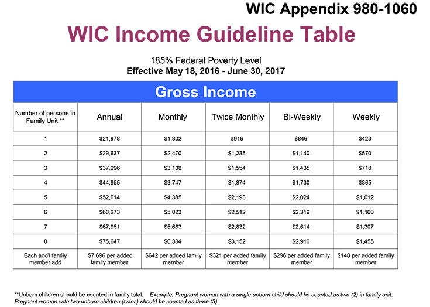

WIC/Nutrition Services
Does Your Food Budget Need A Boost? Having Trouble Buying Healthy Foods?
WIC Can Help! Call Us Today! Call 408-960-0900
Where is WIC?
1685 Westwood Dr., Suite 4 | San Jose, CA 95125
Monday through Friday 8:00am to 5:00pm
Thursday 8:00am to 7:00pm
1642 East Capitol Expressway | San Jose, CA 95121
Monday through Friday 8:00am to 4:30pm
Thursday 9:30am to 6:30pm
327 Moffett Blvd. Suite F | Mountain View, CA 94043
Monday through Friday 8:00am to 4:30pm
What is WIC?
Healthy Foods And More!
• Monthly food checks to buy healthy foods at NO COST to you if you
qualify.
• Infant formula for your baby if needed.
• Tips to help your family eat well and stay healthy.
• Nutrition classes online.
• Farmers' Market food checks.
• Social Service referrals such as Medi-Cal and TANF.
• Breastfeeding support and supplies.
• Help in finding medical and dental services.

Do I Qualify?
Did you know working families and those on unemployment may qualify for WIC?
If you receive Medi-Cal, TANF or SNAP services, you may qualify for WIC.
Migrant workers also may qualify for WIC and are encouraged to apply.
You qualify for WIC if you are:
• Pregnant or recently had a baby.
• Have an infant or child under the age of five.
• At or below the income guidelines using this table.
• Foster parent of a child under the age of five.

Call 408-960-0900
To determine eligibility for the WIC program.
Bilingual staff is available if needed for Spanish and Vietnamese speaking clients.
This institution is an equal opportunity provider.